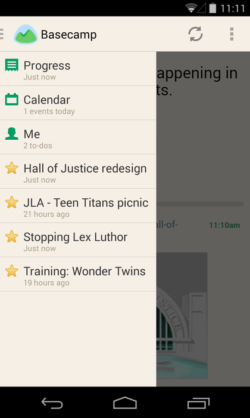
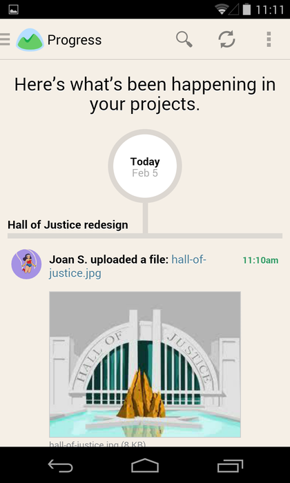
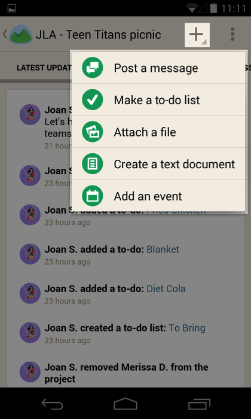
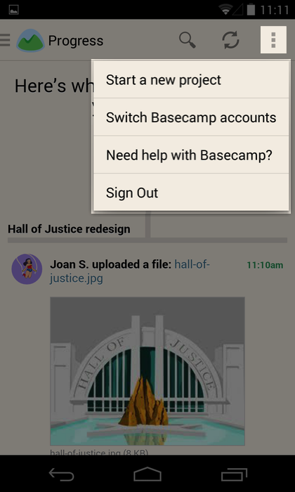

Like the mobile optimized version of Basecamp, the Android app lets you see everything in your account.


The bold time stamp on the right side of each item lets you know which updates you haven't seen yet.
You can add discussions, comments, to-do lists and items, files, and text documents.

If you have the Dropbox App installed on Android 4.4 (or higher), you can select files from your Dropbox account to upload to your project.
You can create new projects, switch between accounts, or log out.

What's out
You can archive projects in the Android app, but you won't be able to see your archived projects.
There are no push notifications at this time. Sorry about that!
Only your new Basecamp accounts will appear in the Android app. Basecamp Classic accounts are not supported at this time.
Where's my account?
If you have a new Basecamp account, but don't see it when you log into your app, check your Launchpad Settings and make sure your account is visible in your Launchpad.